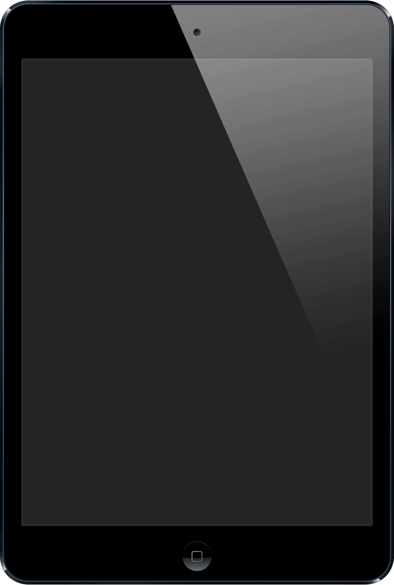

Project Cascadia
by rzxvx · Updated September 2026
Runs a current Linux kernel and Alpine Linux on the original iPad mini, with a touch desktop and Wi-Fi.
-

iPad mini (1st gen) · Apple A5
What you need: a Wi-Fi iPad mini 1, a computer, and either jailbroken iOS on the iPad or a Raspberry Pi Pico.
iOS stays installed. Linux isn't written to the iPad's storage; its files live on a connected computer or in memory. Installing to the iPad is on the roadmap.
Working
- Linux 6.12 and Alpine Linux 3.24
- Both CPU cores
- Multi-touch, and an XFCE desktop with an on-screen keyboard
- Wi-Fi on 2.4 and 5 GHz
- SSH, and installing packages with
apk - Read-only access to iOS system files
Shortcomings
- It can't boot by itself. Each boot is started from jailbroken iOS or a Raspberry Pi Pico.
- No graphics acceleration, so the desktop is drawn by the CPU.
- USB accessories such as flash drives and keyboards don't work.
- Wi-Fi has only been tested on open networks, not password-protected ones.
- Your iOS data, such as photos and apps, can't be read.
- Only the Wi-Fi iPad mini 1 is supported. Newer chips are planned.
Built on
Built on iBSSloader by teutekeune, checkm8 by axi0mX, Legacy iOS Kit and EverPwnage by LukeZGD, checkm8_bootkit by NyanSatan, iBoot32Patcher by iH8sn0w, and the Z2 touch work from Project Sandcastle.
 Legacy iOS Kit
Legacy iOS Kit
 ipwndfu / checkm8
ipwndfu / checkm8
 iBoot32Patcher
iBoot32Patcher
 checkm8_bootkit
checkm8_bootkit
 iBSSloader
iBSSloader
 Wawona
Wawona